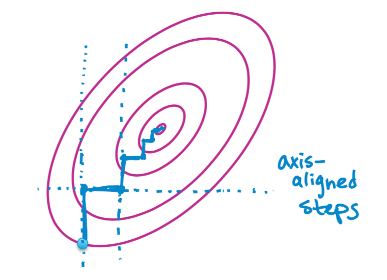

Goal
Minimize some function g, Often, hard to find minimum for all coordinates, but easy for each coordinate.
Coordinate descent:
Initialize \(\hat{w} = 0\) (or smartly...)
----while not converged
---------for j =0,1,...,D(pick a coordinate j)
---------------\(\hat{w_{j}} <- min_{w}g(w_{0},...w_{D})\)
Optimizing least squares objective one coordinate at a time
\[RSS(w) = \sum^{N}_{i=1}(y_{i} - \sum^{D}_{j=0}w_{j}h_{j}(xi))^{2}\]
aside: \(h_{j}(xi)\) represent normalized feature
Fix all coordinates \(w_{-j}\)(all feature except \(w_{j}\)) and take partial w.r.t \(w_{j}\)
\[\frac{\partial}{\partial w_{j}}RSS(w) = -2\sum^{N}_{i=1}h_{j}(x_{i})(y_{i} - \sum^{D}_{j=0}w_{j}h_{j}(xi))\] = \[-2\sum^{N}_{i=1}h_{j}(x_{i})(y_{i} - \sum_{k \neq j}w_{k}h_{k}(x_{i}) - w_{j}h_{j}(x_{i})) \] = \[ -2\sum^{N}_{i=1}h_{j}(x_{i})(y_{i} - \sum_{k \neq j}w_{k}h_{k}(x_{i})) + 2w_{j}\sum^{N}_{i=1}h_{j}(x_{i})^{2}\]
by definition, \(\sum^{N}_{i=1}h_{j}(x_{i})^{2}\) = 1, \(-2\sum^{N}_{i=1}h_{j}(x_{i})(y_{i} - \sum_{k \neq j}w_{k}h_{k}(x_{i})) = p_{j}\)
we get
\[-2p_{j} + 2w_{j}\]
Set partial = 0 and solve: \[\frac{\partial}{\partial w_{j}}RSS(w) = -p_{j} + w_{j}\]
==> \[p_{j} = w_{j}\]
Coordinate descent for least squares regression
Initialize \(\hat{w} = 0\) (or smartly...)
----while not converged
---------for j =0,1,...,D(pick a coordinate j)
---------------compute: \[ -2\sum^{N}_{i=1}h_{j}(x_{i})(y_{i} - \sum_{k \neq j}w_{k}h_{k}(x_{i})) \] ---------------set: \[
w_{j} =
\left\{
\begin{aligned}
& p_{j} + \frac{\lambda}{2} &\quad if \, p_{j} < -\frac{\lambda}{2} \\
& 0 &\quad if \, p_{j} \, in \, [-\frac{\lambda}{2},\frac{\lambda}{2}] \\
& p_{j} - \frac{\lambda}{2} &\quad if \, p_{j} > \frac{\lambda}{2}
\end{aligned}
\right.
\]
